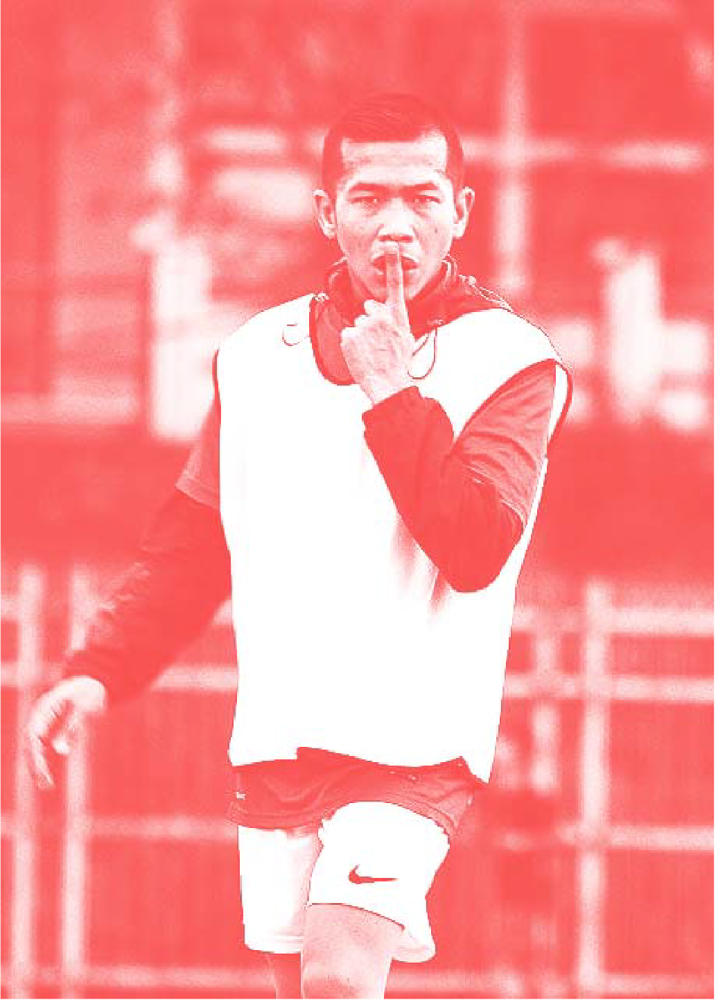

Ginan Koesmayadi.
Ginan Koesmayadi, vokalis Jeruji ini berhasil bangkit dari titik terendah dalam hidupnya: ia seorang pemakai narkoba dengan jarum suntik, sampai akhirnya terinfeksi HIV. , ia alami pada tahun 1997 dan berhasil sembuh pada tahun kisaran 2002, Pada masa itu, ia sudah masuk tahap kecanduan, sehingga sering menjual barang dan mencuri demi memuaskan rasa ketagihannya, dan ia sudah tidak bisa mengontrol rasa kecanduannya, Maka semua rencana yang udah ia susun selalu berantakan, ia pun menyetujui bahwa adanya dampak negatif pada penyalahgunaan NAPZA, selama itu ia merasakan dampak nya adalah sendi - sendi kehidupannya ancur dan penolakan sosial pada dirinya.
Tetapi dengan adanya keinginan dari diri sendiri, dan merasakan bahwa rasa kecanduannya menghancurkannya, akhirnya ia menemukan panti rehabilitasi yang cocok di Bandung. Di situ, ia merasa diterima dan nyaman, di situ juga ia mendapat saran dari seorang konselor untuk menjalani rehabilitasi di Malaysia. Tapi syarat untuk masuk rehab di negeri jiran ini harus melalui tes HIV. Di sinilah, hidupnya melesat terjun ke bawah. Hasil tesnya positif, sepulangnya ia dari rehabilitasi di negri jiran itu ia mendirikan sebuah komunitas tempat OHIDA (Orang Dengan HIV/AIDS) dan pecandu napza berkumpul untuk bertukar pikiran dan tepatnya 1 Januari 2003, Ginan, dan kawan - kawannya mendirikan panti rehabilitasi bernama Rumah Cemara. Para pegiat ini tiap hari mendampingi pecandu yang ikut terapi Methadone di R.S Hasan Sadikin. Selain itu, pendampingan individu juga dilakukan bagi ODHA di klinik Teratai di rumah sakit yang sama.
Di kedua tempat itu Rumah Cemara melakukan dukungan individual untuk mengatasi berbagai masalah, memberi saran, dan mengubah perilaku para pecandu serta pengidap HIV/AIDS. Singkatnya, bersentuhan langsung dengan setiap orang yang didampinginya.
Dengan ini ia membuktikan bahwa mantan pengguna atau bahkan ODHA pun dapat berkerja dengan benar dan dapat berkerja dengan tekanan pekerjaan yang tinggi.
“Dukungan sebaya bisa jadi kekuatan luar biasa. Tanpa dicap sampah atau penyakit masyarakat, ODHA (orang dengan HIV/AIDS) juga seperti kita, ingin berarti bagi masyarakat”.